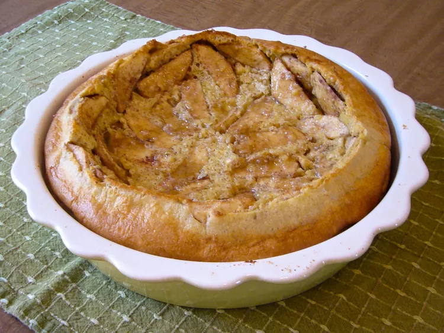

Apple Puff Pancake Recipe

Description
Apple Puff Pancakes are delicious pancakes that are made without needing any syrup.
Below is a recipe for making apple puff pancakes.
Ingredients
- 6 eggs
- 1½ cups milk
- 1 cup all-purpose flour
- 3 tablespoons sugar
- ½ teaspoon salt
- ¼ teaspoon ground cinnamon
- 2 tablespoons butter
- 2 apples - peeled, cored, and sliced
- 3 tablespoons brown sugar
Steps
- Preheat the oven to 220 degrees C.
- Blend eggs, milk, and vanilla with an electric mixer in a large bowl. Add flour, sugar, salt, and cinnamon; mix just until blended. Set batter aside.
- Melt butter in a 9x9-inch square pan. Arrange apple slices in the bottom of the pan; pour batter over them. Spriinkle brow sugar on top.
- Bake in the preheated oven until puffed and lightly browned, about 20 minutes.
Home Page
This is for a hot body.